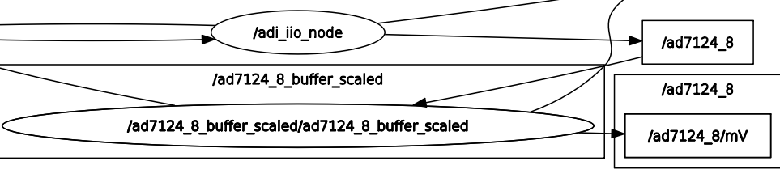
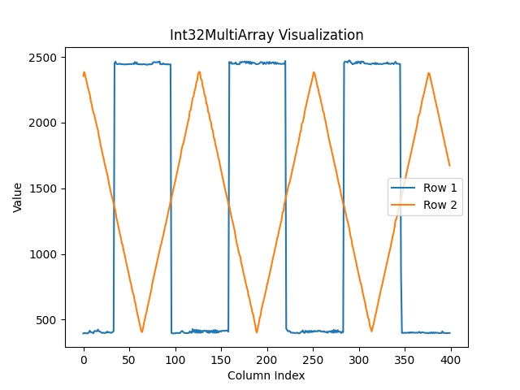

AD7124-8
Prerequisites:
Raspberry Pi 4B as the remote host with Kuiper Linux Image installed.
AD7124 device tree overlay loaded on the RPi.
PMD-RPI-INTZ for HW connections.
EVAL-AD7124-8-PMDZ as the IIO device.
A client running ROS2 with the
adi_iiopackage installed.A network connection between the RPi and the client.
The EVAL-AD7124-8-PMDZ is connected to the RPi via the PMD-RPI-INTZ board
using the SPI Pmod #2 connector. The AD7124 device tree overlay uses
SPI CS1 to communicate with the device.
Warning
The adi_iio_node executable must be running on the client side when
running the examples.
Examples:
Configuring AD7124-8 Channel Attributes using AttrWriteString Service
Configuring a Single Channel Attribute via CLI
You can set a specific attribute of an IIO device channel by calling the
/adi_iio_node/AttrWriteString service. For instance, to set the scale
for input_voltage0-voltage1 of the ad7124-8 device, you would use the following
command:
ros2 service call /adi_iio_node/AttrWriteString adi_iio/srv/AttrWriteString "{
attr_path: 'ad7124-8/input_voltage0-voltage1/scale',
value: '0.000149011'
}"
In this command:
/adi_iio_node/AttrWriteStringis the name of the service.adi_iio/srv/AttrWriteStringis the type of the service.attr_path: 'ad7124-8/input_voltage0-voltage1/scale'specifies the IIO device (ad7124-8), the channel (input_voltage0-voltage1), and the attribute (scale) to be modified.value: '0.000149011'is the new value for the specified attribute.
This approach is useful for quick, individual changes. However, for initializing a device with multiple settings or for more complex setups, using a launch file is more efficient.
Configuring Multiple Channel Attributes via Launch File
The ad7124_8_config.launch.py demonstrates how to set the scale and
sampling_frequency attributes for all 8 differential input voltage channels
of the AD7124-8 device. This is particularly useful for initializing the device
with consistent settings across all its channels.
The launch file achieves this by executing a series of ros2 service call
commands to the /adi_iio_node/AttrWriteString service. For each targeted
differential channel of the ad7124-8 device, it sets:
<channel_path>/scale: Defines the scaling factor (e.g., Volts per LSB) for the channel.<channel_path>/sampling_frequency: Sets the desired sampling rate for the channel.
Tip
To run this launch file, execute the following command in your terminal:
ros2 launch ad7124_8 ad7124_8_config.launch.py
Ensure that the adi_iio_node is running and can access an IIO device
named ad7124-8.
This launch file will configure the scale and sampling_frequency for the
following differential channels on the ad7124-8 device:
input_voltage0-voltage1input_voltage2-voltage3input_voltage4-voltage5input_voltage6-voltage7input_voltage8-voltage9input_voltage10-voltage11input_voltage12-voltage13input_voltage14-voltage15
You can inspect the ad7124_8_config.launch.py file to understand how the
service calls are constructed for each channel.
Enabling AD7124-8 Channel Attribute Topics
Similar to other IIO devices, the adi_iio_node can publish the values of
AD7124-8 attributes to ROS 2 topics. This allows other ROS 2 nodes to subscribe
to these topics and receive real-time updates of attribute values, such as raw
ADC readings from its differential channels.
Enabling a Single Attribute Topic via CLI
To enable topic publishing for a specific attribute of the AD7124-8, you can
call the /adi_iio_node/AttrEnableTopic service. For instance, to start
publishing the raw value of the input_voltage0-voltage1 differential
channel of the ad7124-8 device, you would use the following command:
ros2 service call /adi_iio_node/AttrEnableTopic adi_iio/srv/AttrEnableTopic "{
attr_path: 'ad7124-8/input_voltage0-voltage1/raw',
loop_rate: 1
}"
This command instructs the adi_iio_node to create a publisher for the
specified attribute. The topic name will be automatically generated based on the
attr_path (e.g., /ad7124-8/input_voltage0-voltage1/raw/read for readable
attributes). The node will then periodically read the attribute and publish its
value.
While this method is useful for enabling individual topics, a launch file is more convenient for enabling topics for multiple attributes or channels at once.
Enabling Multiple AD7124-8 Attribute Topics with a Launch File
The ad7124_8_topics.launch.py launch file provides a convenient way to
enable topic publishing for the raw attributes of several differential
input channels of the AD7124-8 device simultaneously.
This launch file executes a series of ros2 service call commands to the
/adi_iio_node/AttrEnableTopic service for each specified channel’s raw
attribute.
Tip
To run this launch file, ensure the adi_iio_node is running and
connected to your AD7124-8 device. Then, execute the following command:
ros2 launch ad7124_8 ad7124_8_topics.launch.py
By default, this launch file sets the loop_rate for publishing to 1 Hz.
You can change the loop_rate variable in the launch file.
This will enable topics for the raw attributes of the following differential
channels on the ad7124-8 device:
input_voltage0-voltage1/rawinput_voltage2-voltage3/raw
After running the launch file, you can list the available topics using
ros2 topic list:
/ad7124_8/input_voltage0_voltage1/raw/read
/ad7124_8/input_voltage0_voltage1/raw/write
/ad7124_8/input_voltage2_voltage3/raw/read
/ad7124_8/input_voltage2_voltage3/raw/write
Since these are input channels, the /read suffixed topics can be used to
echo the current raw ADC values:
ros2 topic echo /ad7124_8/input_voltage0_voltage1/raw/read
You can inspect the ad7124_8_topics.launch.py file to see exactly which
channels’ topics are enabled, how the service calls are structured, and how the
loop_rate variable is used.
Transforming Raw AD7124-8 Data to Voltage Readings
Once you have topics publishing raw ADC data from the AD7124-8, you will likely
want to convert this raw integer data into meaningful voltage units. The ROS 2
ecosystem provides utility nodes like topic_tools transform that can
subscribe to a topic, apply a mathematical transformation to the messages, and
republish the results on a new topic.
The ad7124_8_transforms.launch.py launch file demonstrates this process.
It converts the raw ADC readings from the input_voltage0_voltage1 and
input_voltage2_voltage3 differential channels of the AD7124-8 into voltage
values.
This launch file uses the topic_tools transform utility to:
Subscribe to the raw data topics, e.g.,
/ad7124-8/input_voltage0_voltage1/raw/read.Apply a formula to convert the raw data (
m.data) to Volts.Publish the calculated voltage as a
std_msgs/Float64message on new topics, e.g.,/ad7124-8/input_voltage0_voltage1/volts.
Tip
To use this transformation, you would typically first enable the raw
data topics using the ad7124_8_topics.launch.py file as described
previously. Then, in a new terminal, run the transforms launch file:
ros2 launch ad7124_8 ad7124_8_transforms.launch.py
This will start the transformation nodes. You can then inspect the new topics:
ros2 topic list
To see the transformed voltage readings for the first differential channel, for example:
ros2 topic echo /ad7124_8/input_voltage0_voltage1/volts
You can inspect the ad7124_8_transforms.launch.py file to see the exact
commands and transformation expressions used.
Bringing Up the Full AD7124-8 Example System
To simplify the process of configuring the AD7124-8, enabling its data topics,
and setting up data transformations, a top-level bringup launch file is
provided: ad7124_8_bringup.launch.py. This file orchestrates the execution
of the previously discussed launch files:
Tip
To launch the complete AD7124-8 example system, execute the following command:
ros2 launch ad7124_8 ad7124_8_bringup.launch.py
Note
The transform launch file is not included in the bringup process because it depends on the topics being active. If the topics are not available quickly enough, the transform launch file might fail. It is recommended to run the transform launch file separately after ensuring that the topics are active.
Creating Custom ROS 2 Nodes for IIO Device Interaction
The following example demonstrates a Python-based ROS 2 node that monitors data from an AD7124-8 channel using buffered reads which can be accessed via a topic.
Example: ad7124_8_buffer_scaled.py
Usage:
To run the example, execute the following command in your terminal:
ros2 launch ad7124_8 ad7124_8_buffer_scaled.launch.py
When you execute the command, the ROS2 launch system will start the
adi_iio node and the ad7124_8_buffer_scaled node example.
adi_iio_node:
Package:
adi_iioExecutable:
adi_iio_nodePurpose: Acts as a bridge to the Linux Industrial I/O (IIO) subsystem, enabling communication with connected hardware sensors.
Key Parameters:
uri: "ip:10.76.84.244": Configures the node to use a remote IIO Network context where the target HW is connected.
ad7124_8_buffer_scaled:
Package:
ad7124_8Executable:
ad7124_8_buffer_scaledPurpose:
It relies on the
adi_iio_nodeto access these hardware attributes.Key Parameters:
device_path: specifies the IIO device path.channels: specifies the channels to be monitored.sampling_frequency: channel attribute which is used to set the sampling frequency for the channels.scale: channel attribute which is used to set the scale for the channels.samples_count: the number of samples to be read from each channel.loop_rate: 1: the operational loop frequency for the scaled output topic.topic_name: the name of the topic containing raw buffer data.
Service Clients:
AttrReadString: used to store
scalefactor for each channel in the buffered reading.AttrWriteString: used to bring
sampling_frequencyandscaleattributes to predefined values.BufferCreate: used to create a buffer for the specified device which will monitor the specified channels.
BufferDestroy: used during cleanup to free HW resources.
BufferDisableTopic: used during cleanup to disable the topic publishing.
BufferEnableTopic: used to enable the topic publishing of raw data for the buffered operations.
Topics:

/ad7124_8 [std_msgs/msg/Int32MultiArray]: this topic contains the buffered data from the specified channels. The data is published in a multi-array format, where each element corresponds to a channel’s reading. Each sample is represented in raw format./ad7124_8/mV [std_msgs/msg/Int32MultiArray]: this topic contains the scaled transformation from raw to millivolts applied by thead7124_8_buffer_scalednode to the buffered data published in the/ad7124_8topic.
Demo AD7124-8 Visualize Waveform:
The data from topics /ad7124_8 and /ad7124_8/mV can be visualized using
the visualize_iio_waveform.py.
First you need to launch the example:
ros2 launch ad7124_8 ad7124_8_buffer_scaled.launch.py
Then within the iio_ros2 repository, enter the launch folder and run
the following command:
python3 visualize_iio_waveform.py --topic /ad7124_8/mV
This will output the scaled data from the /ad7124_8/mV topic as shown in
the figure below. Note that the data is in millivolts and the launch file
was configured to capture buffers of 400 samples from channels:
input_voltage0-voltage1,input_voltage2-voltage3.
Channel AIN0 is connected to channel W1 of an M2K device which outputs
a square wave signal. The channel AIN2 is connected to channel W2 which
outputs a triangle wave. Both waveforms are generated with 1.25V offset,
1V amplitude and 1Hz frequency. Both AIN1 and AIN3 are
connected to GND.

Note
You can also visualize the raw data from the /ad7124_8 topic by
which is created by the combination of the BufferCreate and
BufferEnableTopic services.
python3 visualize_iio_waveform.py --topic /ad7124_8